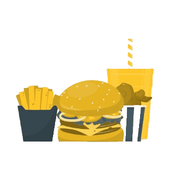
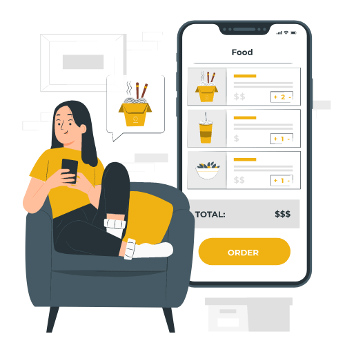

Assim como a sua fome, aparecemos do nada!
BuscaFood: O melhor fast food, pelo melhor preço, em um clique.

BuscaFood: O melhor fast food, pelo melhor preço, em um clique.
O BuscaFood é uma plataforma de comparação de preços de fast food que facilita sua busca pela melhor opção de refeição. Nossa ferramenta permite que você pesquise pratos e refeições com base no termo inserido, localização e categoria do produto.
Na tela de resultados, você pode refinar sua busca utilizando filtros de valor máximo e tamanho do produto. Além disso, é possível ordenar os produtos por avaliação e preço, garantindo que você encontre exatamente o que procura de forma rápida e eficiente.
Ao selecionar o produto desejado, você será direcionado para uma página com os dados de contato do estabelecimento que oferece o produto. Além disso, apresentamos os aplicativos de delivery onde o produto está disponível, juntamente de seus respectivos preços. Ao clicar em um desses aplicativos, você será encaminhado diretamente para a página do app de delivery, onde poderá concluir seu pedido.
Em nossa página de Contato, pode ser feito contato com nossa equipe de desenvolvimento sobre diversos assuntos, desde reclamações / elogios até sugestões de melhorias e correções de dados apresentados.

Assim como toda grande ideia, o BuscaFood surgiu a partir de um trabalho acadêmico, mais especificamente do trabalho de conclusão de um curso técnico. A ideia inicial nasceu em uma tarde de domingo, inspirada no comparador de preços 'Buscapé' e na vontade de comer um cachorro-quente, mas com preguiça de procurar em qual delivery ele estava mais barato. Assim, surgiu a ideia de criar um sistema que não apenas compara preços de um mesmo cachorro-quente desejado, mas também mostra em quais aplicativos de delivery ele está disponível, reduzindo drasticamente o tempo de busca.
Nosso objetivo é reduzir o tempo de busca por uma refeição fast food, eliminando a necessidade de alternar entre diferentes aplicativos de delivery para encontrar o melhor preço ou a melhor qualidade de um produto.
Como toda empresa, queremos ser bem-visto pelos nossos usuários e garantir que nossa missão seja cumprida, a fim de satisfazer as necessidades e demanda da população.
Inicialmente, estamos limitados a produtos e estabelecimentos da cidade de Tupã/SP. No entanto, temos planos de expandir para toda a região, com o objetivo de ajudar todos a encontrar um bom lanche a um preço justo e com rapidez.
Nossa missão é facilitar a busca por refeições fast food, proporcionando aos usuários uma plataforma eficiente para comparar preços, qualidade e disponibilidade em diferentes aplicativos de delivery. Queremos economizar seu tempo e tornar a experiência de encontrar a melhor refeição mais simples e rápida.
Nossa visão é nos tornarmos a principal referência em comparação de preços de fast food, oferecendo uma experiência integrada e eficiente que atenda às necessidades de todos os usuários, revolucionando a maneira como as pessoas escolhem e compram suas refeições.